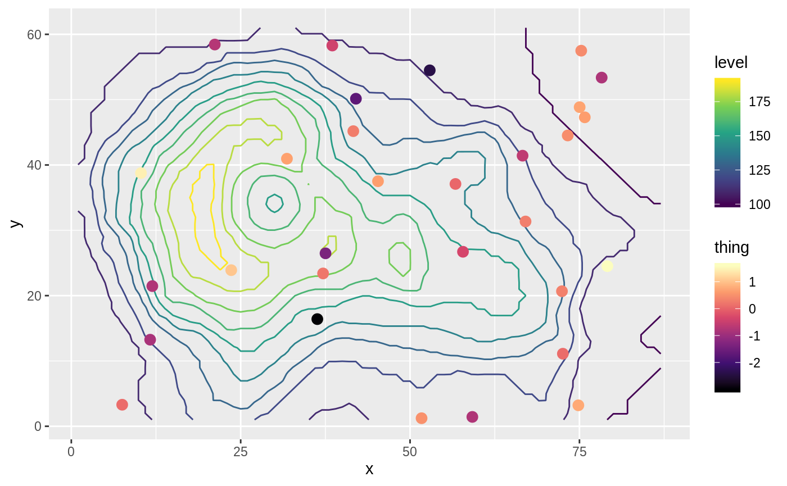

ggnewscale tries to make it painless to use multiple color and fill scales in ggplot2. It’s very experimental, so use at your own risk!
For another way of defining multiple scales, you can also try relayer.
Demo
You can test the package in this RStudio Cloud instance without installing anything on your computer.
Usage
The main function is new_scale() and its aliases new_scale_color() and new_scale_fill(). When added to a plot, every geom added after them will use a different scale.
As an example, let’s overlay some measurements over a contour map of topography using the beloved volcano.
library(ggplot2)
library(ggnewscale)
# Equivalent to melt(volcano)
topography <- expand.grid(x = 1:nrow(volcano),
y = 1:ncol(volcano))
topography$z <- c(volcano)
# point measurements of something at a few locations
set.seed(42)
measurements <- data.frame(x = runif(30, 1, 80),
y = runif(30, 1, 60),
thing = rnorm(30))
ggplot(mapping = aes(x, y)) +
geom_contour(data = topography, aes(z = z, color = stat(level))) +
# Color scale for topography
scale_color_viridis_c(option = "D") +
# geoms below will use another color scale
new_scale_color() +
geom_point(data = measurements, size = 3, aes(color = thing)) +
# Color scale applied to geoms added after new_scale_color()
scale_color_viridis_c(option = "A")